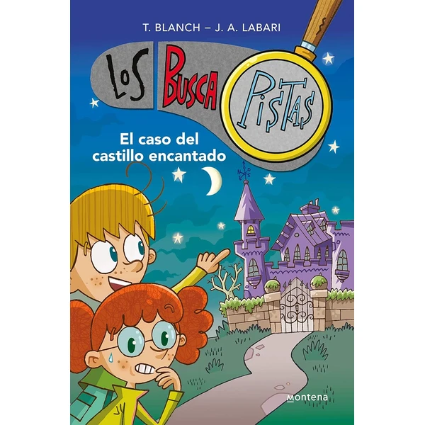
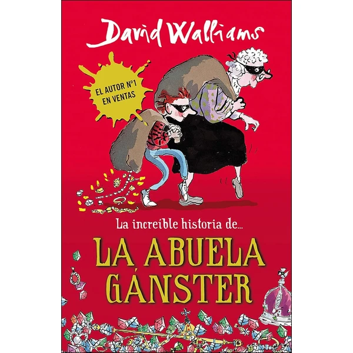
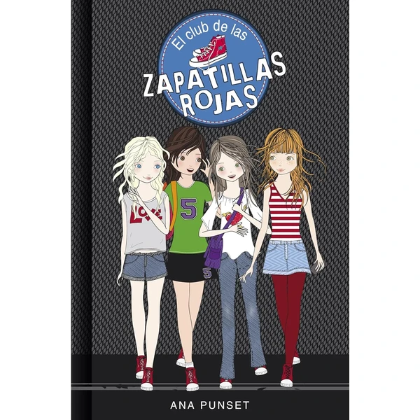
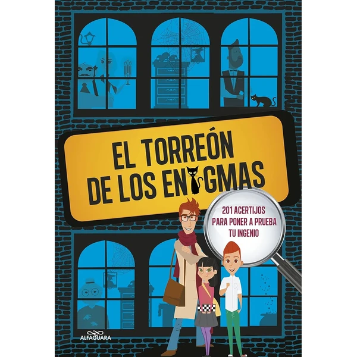
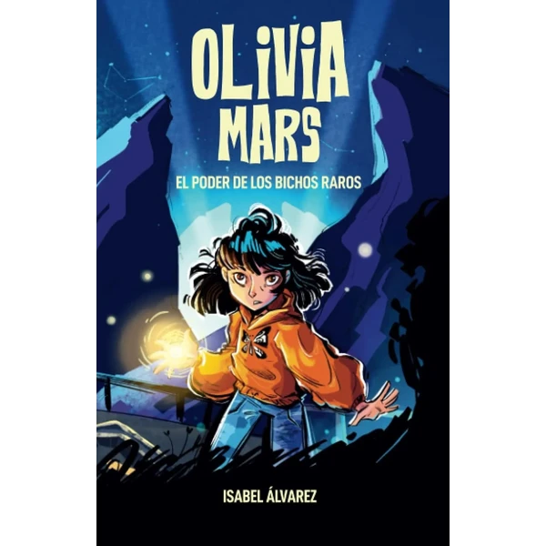
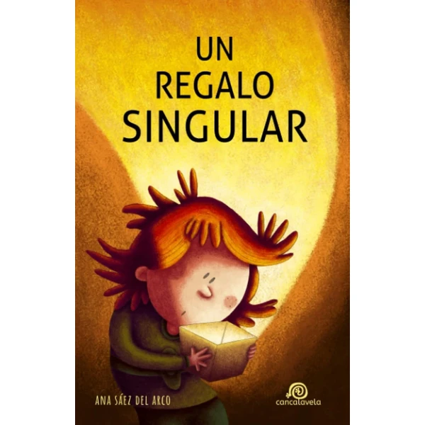
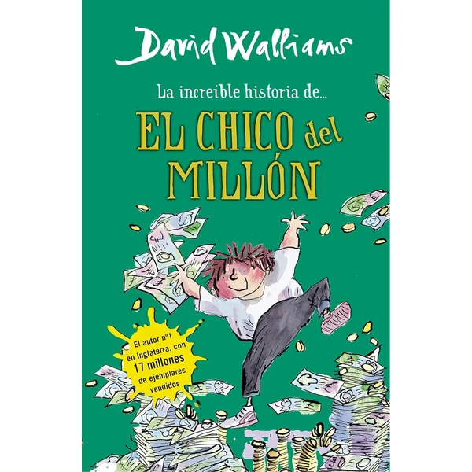

Los BuscaPistas: El Castillo Encantado
Primer libro de la serie Los BuscaPistas, con un misterio protagonizado por jóvenes detectives en un castillo lleno de secretos. Combina intriga y humor en una lectura pensada para primeros lectores de novela.
⭐ ¿Por qué nos gusta?
- ✔ Primer libro de una serie de misterio.
- ✔ Ritmo ágil, ideal para primeros lectores.
- ✔ Combina intriga con toques de humor.
💬 Lo que más destacan las familias
Muchas familias coinciden en que engancha desde las primeras páginas gracias al misterio bien planteado. Es habitual que, tras terminarlo, los niños pidan seguir con el resto de la serie.
Ver en Amazon

101 Casos Extraordinarios ¿Quién ha sido?
Una colección de 101 minicasos de misterio para resolver en solo 5 minutos cada uno, ideal para leer a ratos sueltos. Estimula la lógica y la deducción con un formato breve y muy accesible.
⭐ ¿Por qué nos gusta?
- ✔ 101 casos cortos, perfectos para ratos sueltos.
- ✔ Estimula la lógica y la deducción.
- ✔ Formato breve, ideal para lectores que se inician.
💬 Lo que más destacan las familias
Se repite bastante el comentario de que el formato de casos cortos resulta perfecto para leer antes de dormir sin comprometerse a un capítulo largo. Gusta especialmente a quienes disfrutan de los retos de lógica.
Ver en Amazon

La Abuela Gánster
Una novela de David Walliams sobre una abuela que esconde un pasado sorprendente como ladrona de joyas. Mezcla humor, ternura y aventura en una historia pensada para enganchar a lectores de esta edad.
⭐ ¿Por qué nos gusta?
- ✔ Firmado por David Walliams, autor muy popular.
- ✔ Combina humor con una trama de aventuras.
- ✔ Personajes entrañables y giros inesperados.
💬 Lo que más destacan las familias
Entre los comentarios más habituales aparece lo mucho que engancha el estilo de Walliams, con humor y ritmo muy adaptado a esta edad. Muchas familias ya conocen al autor por otros títulos y repiten con este.
Ver en Amazon

El Club de las Zapatillas Rojas
Primer libro de una serie sobre amistad, protagonizada por un grupo de amigas que forman su propio club. Una lectura cercana pensada para niñas y niños que empiezan a leer novelas más largas.
⭐ ¿Por qué nos gusta?
- ✔ Primer libro de una serie sobre amistad.
- ✔ Personajes cercanos con los que identificarse.
- ✔ Buena transición hacia novelas más largas.
💬 Lo que más destacan las familias
Lo que más suele gustar es lo bien que refleja las dinámicas de amistad a esta edad, algo con lo que muchos niños se identifican fácilmente. Es habitual que termine llevando a por el resto de la serie.
Ver en Amazon

¡Resuelve el Misterio! El Secreto de la Mansión
Primer título de una colección interactiva en la que el lector debe seguir pistas para resolver un misterio en una mansión. Invita a participar activamente en la trama, no solo a leerla.
⭐ ¿Por qué nos gusta?
- ✔ Formato interactivo, el lector resuelve el misterio.
- ✔ Fomenta la atención al detalle.
- ✔ Primer libro de una colección completa.
💬 Lo que más destacan las familias
Un detalle que aparece una y otra vez es lo mucho que gusta el componente interactivo, sentirse parte de la investigación en vez de solo leerla. Es una buena opción para quienes prefieren libros con algo de participación activa.
Ver en Amazon

Eres una Chica Fantástica
Una colección de historias inspiradoras sobre el valor, la amistad y la autoconfianza, pensada para reforzar la autoestima de las niñas. Cada relato deja una reflexión sencilla sobre fortaleza interior.
⭐ ¿Por qué nos gusta?
- ✔ Refuerza la autoconfianza con historias inspiradoras.
- ✔ Relatos breves, fáciles de leer por separado.
- ✔ Aborda valores como la amistad y el valor.
💬 Lo que más destacan las familias
No es raro encontrar comentarios sobre lo bien que transmite mensajes positivos sin resultar aleccionador. Muchas familias lo valoran como lectura para compartir y comentar juntos algún capítulo.
Ver en Amazon

El Torreón de los Enigmas
Una recopilación de 201 acertijos ilustrados pensados para poner a prueba el ingenio de forma entretenida. Perfecto para leer por partes, sin necesidad de seguir una trama continua.
⭐ ¿Por qué nos gusta?
- ✔ 201 acertijos para poner a prueba el ingenio.
- ✔ Formato ilustrado y fácil de hojear.
- ✔ No requiere seguir una trama continua.
💬 Lo que más destacan las familias
Una característica muy mencionada es lo entretenido que resulta ir resolviendo acertijos sin orden fijo, picoteando el libro cuando apetece. Se recomienda para niños a los que les gustan los retos de lógica.
Ver en Amazon

Olivia Mars y el Poder de los Bichos Raros
Una novela de aventuras y misterio protagonizada por Olivia Mars, que descubre poderes especiales relacionados con insectos. Combina emoción, curiosidad científica y un toque de fantasía.
⭐ ¿Por qué nos gusta?
- ✔ Mezcla aventura, misterio y curiosidad científica.
- ✔ Protagonista femenina fuerte y curiosa.
- ✔ Ritmo trepidante, pensado para enganchar.
💬 Lo que más destacan las familias
Muchos padres coinciden en que la protagonista resulta muy inspiradora, especialmente para niñas curiosas por la ciencia. El ritmo trepidante de la trama mantiene el interés de principio a fin.
Ver en Amazon

Un Regalo Singular
Una novela de aventuras futuristas y ciencia ficción pensada para niños a partir de 8 años. Combina un ritmo ágil con un mundo imaginativo que despierta la curiosidad por lo desconocido.
⭐ ¿Por qué nos gusta?
- ✔ Aventura de ciencia ficción para primeros lectores.
- ✔ Mundo imaginativo que estimula la curiosidad.
- ✔ Ritmo ágil, pensado para enganchar rápido.
💬 Lo que más destacan las familias
Se repite bastante el comentario de que resulta una buena puerta de entrada a la ciencia ficción para esta edad. El mundo futurista que plantea despierta bastante curiosidad en los primeros capítulos.
Ver en Amazon

La Increíble Historia del Chico del Millón
Una historia divertida sobre un chico que se convierte en millonario de la noche a la mañana y debe aprender a manejar su nueva fortuna. Combina humor con una reflexión ligera sobre el valor del dinero.
⭐ ¿Por qué nos gusta?
- ✔ Historia divertida con un punto de reflexión.
- ✔ Ritmo ágil, fácil de leer de un tirón.
- ✔ Aborda el valor del dinero sin sermonear.
💬 Lo que más destacan las familias
Entre los comentarios más habituales aparece lo entretenida que resulta la premisa, poco habitual en libros para esta edad. El tono desenfadado ayuda a que la lectura se haga corta y amena.
Ver en Amazon